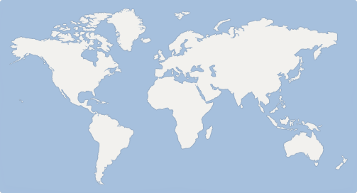

Remsima® 상세 정보
고해상도 3D 구조부터 핵심 제조 공정까지, 심층 데이터를 확인하세요.
1
/
5
고해상도 3D 구조부터 핵심 제조 공정까지, 심층 데이터를 확인하세요.
본 약관은 의약품 정보 통합 플랫폼 'SimiliBio'(이하 '회사'라 함)가 제공하는 제반 서비스의 이용 조건 및 운영 원칙, 그리고 이용자와 회사 간의 권리·의무 및 책임 사항을 규정함을 목적으로 합니다.
SimiliBio는 투명하고 개방적인 지식 생태계를 지향합니다. 사이트 내 모든 콘텐츠(임상 데이터, 바이오시밀러 정보 등)는 비회원을 포함하여 누구나 제한 없이 자유롭게 열람할 수 있습니다.
본 플랫폼은 의약학 정보의 전문성과 신뢰성 유지를 위하여 엄격한 작성 권한 분리 정책을 시행하고 있습니다.
SimiliBio에서 제공되는 모든 의약품 정보는 소속이 확인된 전문가들에 의해 작성 및 검토되나, 이는 어디까지나 학술적 참고 및 일반적인 정보 제공을 목적으로 합니다. 본 정보는 결코 전문 의료인의 직접적인 진단, 진료 및 처방을 대신할 수 없습니다.
인증된 사용자가 작성한 정보라 할지라도, 이를 기반으로 내린 최종적인 의학적 결정 및 사업적 판단에 대한 책임은 전적으로 이용자 본인에게 있습니다. 회사는 정보의 오류, 누락 또는 최신 변경 사항 미반영으로 인해 발생하는 어떠한 손해에 대해서도 법적 책임을 지지 않습니다.
본 웹사이트의 모든 저작물은 크리에이티브 커먼즈 저작자표시-비영리-동일조건변경허락 2.0 대한민국(CC BY-NC-SA 2.0 KR) 라이선스에 따라 이용할 수 있습니다. 상업적 목적의 이용은 엄격히 금지되며, 상세 기준은 콘텐츠 가이드라인을 따릅니다.
SimiliBio는 사용자의 개인정보를 최소한으로 수집하며, 특히 전문가 네트워크 유지를 위한 소속 인증 과정에서 가장 엄격한 데이터 보호 및 서버 미저장 원칙을 준수하고 있습니다.
회사는 서비스 이용 수준에 따라 개인정보 수집 범위를 엄격하게 차등화하고 있습니다.
수집한 최소한의 개인정보는 다음의 목적을 위해서만 활용됩니다.
소속 확인을 위해 고객님께서 제출하신 '증빙 서류(재직증명서, 학생증 사본 등)'는 운영진의 육안 확인이 완료되는 즉시 복구 불가능한 방법으로 영구 파기됩니다. 회사는 어떠한 경우에도 고객님의 증빙 서류 원본 및 사본을 당사의 서버나 데이터베이스(DB)에 저장하거나 별도 보관하지 않음을 강력히 약속드립니다. 안심하고 인증 절차를 진행해 주십시오.
회사는 회원이 회원 탈퇴를 요청하거나 개인정보 수집 및 이용 목적이 달성된 경우, 서버에 저장된 모든 개인정보를 지체 없이 파기합니다. 단, 관계 법령(전자상거래법, 통신비밀보호법 등)의 규정에 의하여 일정 기간 보존할 의무가 있는 예외적인 경우에만 법령에서 정한 기간 동안 분리하여 안전하게 보관합니다.
회사는 이용자의 데이터 보호를 최우선 가치로 여기며, 다음과 같은 기술적 조치를 적용합니다.
SimiliBio를 이용해 주셔서 진심으로 감사드립니다.
저희 플랫폼은 신뢰할 수 있는 전문 데이터 생태계를 위해 기업 및 대학 소속 인증을 완료한 전문가분들께만 게시글 작성 권한을 부여하고 있습니다. 이와 관련하여 궁금하신 점이나 도움이 필요하시면 언제든 아래 이메일로 문의해 주세요.
진행 중인 인증 서류의 반려 사유 확인, 원활하지 않은 시스템 인증에 대한 수동 인증 요청을 도와드립니다.
특정 연구 기관이나 대학, 기업 차원의 협업 및 프로젝트 인원 대량 계정 생성/인증과 관련된 안내를 받으실 수 있습니다.
잘못 기재된 의약품 정보의 수정 요청, 새로운 연구 및 임상 데이터 제보를 접수합니다.
사이트 이용 중 발생한 기술적 장애 신고 및 비즈니스 제휴 제안 등을 환영합니다.
가입 및 인증 문의를 위해 고객센터로 발송해 주신 개인의 소속 증빙 서류(재직증명서, 학생증 사본 등)는 상담 및 확인 절차가 종료되는 즉시 안전하게 영구 파기됩니다. 어떠한 경우에도 당사 시스템이나 이메일 서버에 무단으로 보관되지 않으므로 안심하셔도 좋습니다.
support@similibio.com (평일 09:00 - 18:00)
단순 열람은 누구에게나 자유롭습니다.
전문가들과 깊이 있는 인사이트를 공유하시려면 로그인을 진행해 주세요.
아직 SimiliBio의 회원이 아니신가요?
안내: 게시글 및 댓글 작성 권한은 가입 후 소속 인증(기업, 대학 등)이 완료된 회원에게만 안전하게 부여됩니다.
단순 열람을 위한 기본 계정을 생성합니다. 입력해 주신 정보는 안전하게 보관됩니다.
영문, 숫자, 특수문자를 포함하여 8자 이상 입력해 주세요.
게시글 작성 권한 부여 (선택)
게시글 및 댓글 작성은 소속이 인증된 전문가만 가능합니다. 당장 서류가 없다면 가입 후 나중에 인증하실 수 있습니다.
안심하세요. 제출 서류는 소속 확인 즉시 영구 파기되며 서버에 저장되지 않습니다.
넓은 혈관으로 직접 투여되어 1회 투여량이 많아도 농도 제약이 상대적으로 적습니다. 단백질 분자가 넓게 퍼져 있습니다.
한정된 피하 조직 투여를 위해 단백질이 촘촘하게 뭉쳐 있습니다. 이를 해결하기 위한 고농도 안정화 기술이 필수적으로 적용됩니다.
단백질 분자가 촘촘해지면 서로 엉겨 붙는 '응집 현상(Aggregation)'이 발생합니다. 이로 인해 약효를 잃거나 부작용을 유발할 수 있습니다. SimiliBio는 이러한 고농도 상태에서도 분자들이 독립적인 구조를 유지하는 첨가제(Excipient) 배합 기술을 시각화하여 보여줍니다.
Celltrion Songdo HQ Center

Europe Hub
Temp: 4.2°C ● Stable
US East Coast
Temp: 4.5°C ● Stable
ASEAN Hub
Temp: 5.1°C ● Stable
Active Routes
24 Global Way
Avg Fleet Temp
4.6°C (-0.2)
Status
All Secure
Live Data Syncing...
TRANS-GLOBAL BIOLOGICS COLD CHAIN SYSTEM v4.2
KR: SONGDO
Frankfurt, DE
Temp
4.2°C
Humid
45%
[SYS] Connection to #K-802 Established.
[TRK] Flight KE541 over Central Asia.
[SNS] US-Node Temp Sensor: 4.5°C.
[SYS] Dual-Validation Auth Completed.
[SNS] ASEAN-Node: Stable at 5.1°C.
System Integrity
99.98% OPTIMAL
Active Global Nodes
Fleet Stability
Risk Level Index
Current Monitoring Time
00:00:00:00